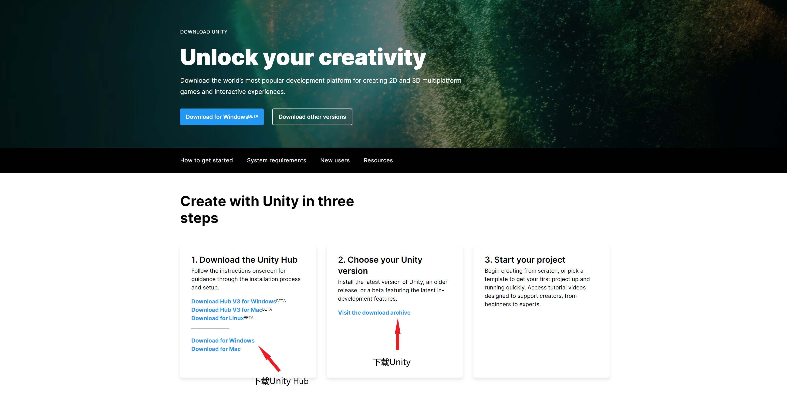
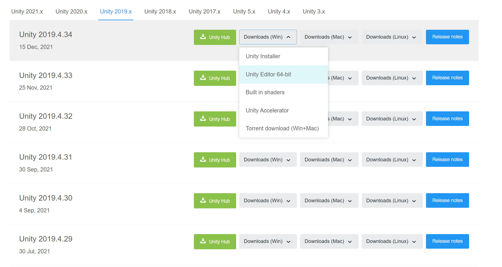
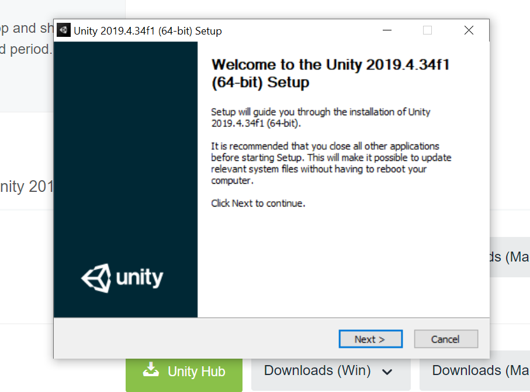
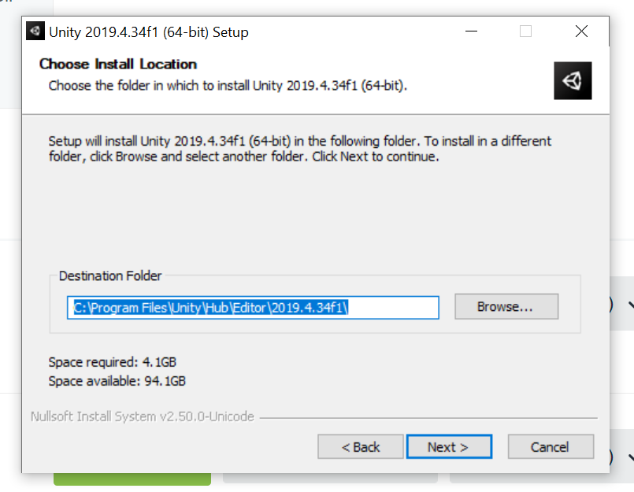
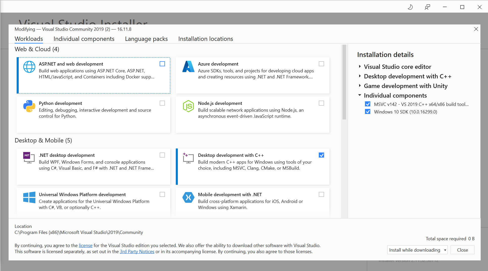
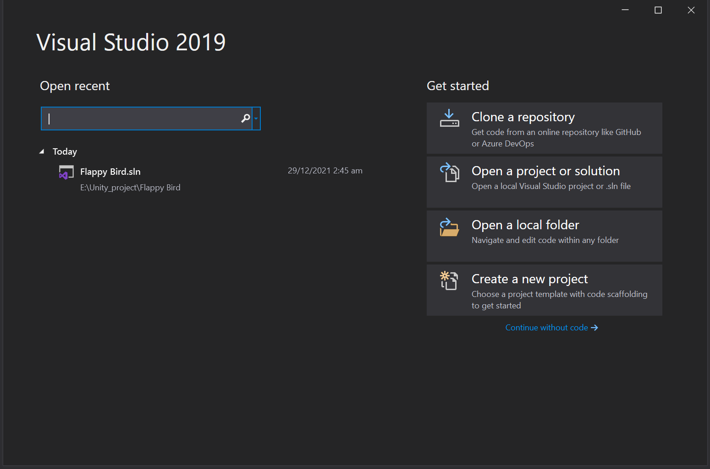
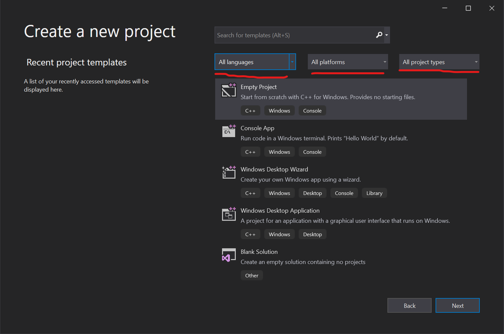

本篇将会给大家带来Unity3D这款游戏引擎的安装教程
一、安装Unity
首先在官网下载Unity
Unity官网地址：Unity

进入官网后需要登录Unity账号才能下载，用邮箱注册一个即可。
Unity会建议你下载Unity Hub，这是个工程管理工具，在你有很多工程，需要来回切换不同版本的Unity时很有用，可以根据需要下载。当然，这是收费的，网上也有破解教程，有需求请自行寻找，有能力的也请支持正版。
我们点击第二部里的链接，在这里有历史版本的Unity3D，这里推荐下载2019或2018系列，版本稳定，在之前的版本太过老旧，有些新功能是不支持的。这里选择下载Unity 2019.4.34，在Downloads里选择Unity Editor 64-bit。

下载完后双击进入安装界面。按照流程点击next即可


点击Browse选择安装位置，然后点击Next开始安装。
二、安装visual studio
visual studio是一款微软发布的代码编辑器，它包含整个软件开发周期所需的工具，功能非常强大。同时它也是Unity支持的外部开发编辑器。
visual studio下载地址 ：VisualStudio
Visual studio最新版是2020，但是为了版本稳定选择下载2019。同样的，下载visual studio也需要登录微软账号，没有注册一个即可，然后选择下载社区版(Community).这个版本的是免费的。
下载完后双击visual studio installer，安装流程点击继续，然后它会开始下载文件，等程序下载完后进入这个界面

这里是要选择安装开发环境，这里我们要勾选Game development with Unity。在Language packs里可以选择不同的语言包；Installation locations里可以选择安装位置；Individual components里可以选择安装组件，这里默认的即可，有需要的可以回头再安装。选择完后右下角可以选两种模式，边下载边安装和下载完后再安装，网络情况好的可以选择边下载边安装的模式。我这里已经安装了，未安装的右下角会有一个安装按钮，选择完后点击即开始安装visual studio。
安装完后，打开visual studio，进入这个界面

选择Create a new project，

上方可以选择你的工程使用什么编程语言，使用什么平台，以及是什么类型的应用，选择好后点击Empty Project即可进入Visual Studio
三、设置Visual Studio为Unity的默认编辑器
现在Unity和visual Studio都安装好了，现在只需把visual studio设置为Unity的默认编辑器。打开Unity，选择新建一个2D或3D工程，输入工程的名字和保存路径后进入到Unity，按下图操作。
这样在Unity里面创建的脚本就默认使用Visual studio打开了。